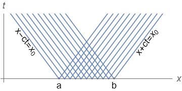
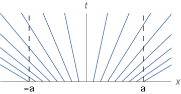
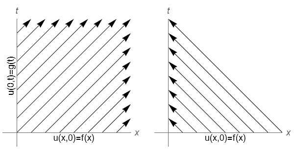

11. Partial differential equations¶
Partial differential equations can be classified as either hyperbolic, parabolic, or elliptic, with the classification determining the types of conditions that can be applied and the appropriate choice of finite difference scheme. In the next chapters we will see some examples for classic problems such as heat, wave, Laplace, diffusion.
11.1. Boundary and initial conditions¶
The boundary and/or initial conditions are just as important as the PDE itself, and are often where the biggest complications arise. There are three main types of condition that may be given, which are named below.
Dirichlet conditions : The solution is specified on each boundary. For instance, in a thermodynamics problem a boundary may be maintained at a constant temperature, or in fluid dynamics problem a “no-slip” condition may be imposed so that the velocity is fixed on a rigid boundary.
Neumann conditions : The derivative of the solution is specified on each boundary. This type of condition may be used to represent a flux condition, such as in the case of a perfectly insulating boundary.
Cauchy conditions : The solution and derivative are both specified on one boundary. Cauchy conditions are normally applied with respect to time, in the manner of initial conditions are initial-boundary conditions. For instance, in the wave equation initial conditions determine the wave amplitude and phase.
Sometimes Dirichlet/Neumann conditions must be applied together in the form of a linear combination called a Robin condition. Such constraints can arise in electromagnetic or heat transfer problems. They can be dealt with in similar approach to the Neumann type.
11.1.1. Existence and uniqueness of solutions¶
The type of conditions that can be provided depends on the nature of the differential equation being solved. In some cases, boundary conditions of one type will lead to a problem that is not well-posed. Either the conditions do not give a unique solution, or they are too restrictive for any solution to be found.
Fortunately, we may often rely on physical intuition rather than careful mathematical derivations to tell us which conditions are appropriate. Nevertheless, this chapter provides a rough mathematical outline of problems that we may encounter.
11.1.2. Methodological implications¶
The nature of the boundary conditions also restricts the type of finite difference method that we can use. In the case of Cauchy conditions it is possible to use an explicit or implicit time-stepping method in a similar manner to how we did it in section 4, whilst for Dirichlet or Neumann conditions it is necessary to modify the approach as discussed in Chapter 8.
Many realistic problems involve Dirichlet/Neumann conditions in space together with Cauchy conditions in time. In these cases a combined scheme is required, such as the Crank-Nicholson scheme or Friedrichs-Lax schemes.
11.2. A note on method of characteristics¶
The method of characteristics is a technique by which some PDEs may be reduced to a simpler or more standard canonical form through the use of transformed variables called characteristic variables. It may be easier to solve the canonical equation or it may be possible to infer from the characteristic variables how boundary or initial information is communicated throughout the solution domain
11.2.1. Example 1 : 1D wave equation¶
Consider the 1D wave equation, which can be reduced to canonical form by introducing characteristic variables \(\xi=x-ct\), \(\eta=x+ct.\)
The solution of the equation is a superposition of arbitrary functions \(F,G\), which define the shape of waves travelling in the positive and negative \(x\) directions:
In the case of travelling, wave-like solutions such as these it is of particular interest to locate curves where the characteristic variables are constant, to illustrate the propagation of information from a boundary.
Here, the region of influence of a particular point \((x_0,t)\) is illustrated below. It can be seen that an initial condition for the domain \(x\in [a,b]\) cannot influence a region outside of the space-time domain spanned by the characteristics.

{kind=link}
11.2.2. Example 2: Inviscid Burgers’ equation¶
Consider the following first order problem
Burgers’ equation is a quasi-linear problem, so it cannot be reduced by a simple transform relating variables \((x,t)\). However, progress can be made for quasi-linear problems by comparison to results obtained by the method of characteristics for first order linear problems. Here, it may be deduced that the solution remains constant along characteristic curves satisfying \(x=x_0(t+1)\).
A plot of the characteristics is shown below. It can be seen that the solution to this problem with the given initial condition cannot be constant in time at the endpoints of \(\Omega\), therefore the posed problem has no solution.
{kind=link}
In fact, the general solution to the inviscid form of Burgers’ equation that satisfies \(u(0,x)=f(x)\) can be written in implicit form as \(u=f(x-ut)\), and for the special case where \(f(x)=x\) this rearranges to give the explicit result \(u=x(1+t)^{-1}\).
11.3. Classification¶
PDEs can be classified into three types, which are called hyperbolic, parabolic and elliptic. The classification of the problem is related to the type of boundary/initial conditions that can be given. If the wrong type of conditions are specified for a parabolic or elliptic problem it is likely that there will be insufficient information to determine the solution at all points on the solution domain. If the wrong type of conditions are specified for a hyperbolic problem it is likely that the problem will be over-determined such that it will not be possible to satisfy both the equations and the given conditions.
11.3.1. First order problems¶
All first order PDEs are hyperbolic type. The solutions of this type of ODE demonstrate wave-like properties, in which solutions travel along characteristics of the equation.
Linear hyperbolic equations require as many initial conditions as the number of characteristics that come out of every point in the surface \(t=0\), and as many boundary conditions as the number of characteristics that cross a point in the space boundary pointing inwards into the domain.
For example, consider the following problem:
The characteristics for this problem are given by \(x-ct=\mathrm{const}\). Their direction depends on the sign of \(c\). If \(c>0\) then BC is needed for \(u(0,t)=g(x)\), along with the initial condition \(u(x,0)=f(x)\), as indicated in the plot on the left. If \(c<0\) then no BC is needed, as indicated in the plot on the right.
{kind=link}
11.3.2. Second order problems¶
The general (linear) form of a second order PDE is given by:
It may be shown that the characteristics of the resulting canonical form depend on the sign of the discriminant \(B^2-4AC\) as set out in the table below.
Type |
Condition |
Characteristics |
BC/IC |
Boundary |
|---|---|---|---|---|
Hyperbolic |
\(B^2-4AC>0\) |
two families |
Cauchy |
Open |
Elliptic |
\(B^2-4AC=0\) |
one family |
Dirichlet or Neumann |
Closed |
Parabolic |
\(B^2-4AC<0\) |
none |
Dirichlet or Neumann |
Open |
In the case of hyperbolic problem the characteristics are given by
In parabolic and hyperbolic equations, characteristics describe lines along which information about the initial data travel. Since elliptic equations have no real characteristic curves there is no meaningful sense of information propagation for elliptic equations. This makes elliptic equations better suited to describe static rather than dynamic processes.